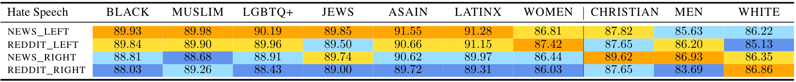
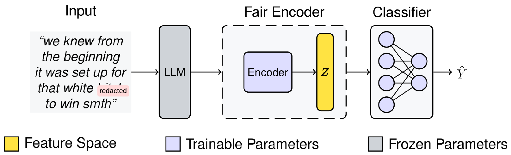
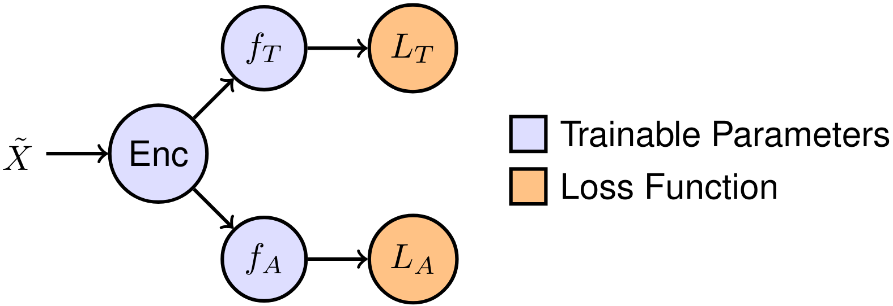
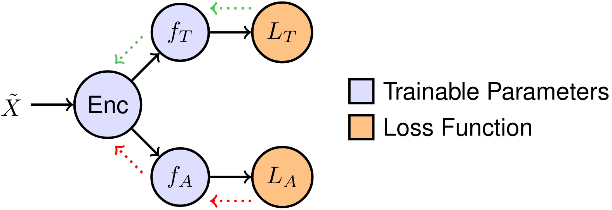

Mitigating Political Bias in Pre-Trained Large Language Models
Sepehr Dehdashtian, Mashrur Morshed Mahmud {sepehr, morshedm} @msu.eduPolitical Bias in Pre-Trained LLMs
Political Bias in Pre-Trained LLMs

Downstream Task
- Hate Speech Detection
- Misinformation Detection
Bias in Hate Speech Detection
Bias in Hate Speech Detection
Debiasing Hate Speech Detection Models
Problem Definition
- Input
- $\tilde{X}$: Text Feature
- $Y$: Target Attribute (Hate speech or not)
- $S$: Sensitive Attribute (Political Party)
- Output
- $Z$: Debiased Representation
Approach
Adversarial Representation Learning (ARL)
Adversarial Representation Learning (ARL)
$\text{Loss}(X; \Theta_{Enc}) = $ $L_T\left( f_T( Enc(\tilde{X}) ), Y \right)$ $ - L_A\left( f_A( Enc(\tilde{X}) ), S \right)$
Data
Data
- Hate Speech Pre-Training
- Hate Speech Dataset: 11,874 Sentences
- Political Leaning
- Reddit Left: 555,226 Sentences
- Reddit Right: 556,816 Sentences
Implementation Details
Implementation Details
Libraries
- Pytorch Lightning: Overal Implementations
- Hugging Face: Pre-Trained LLMs